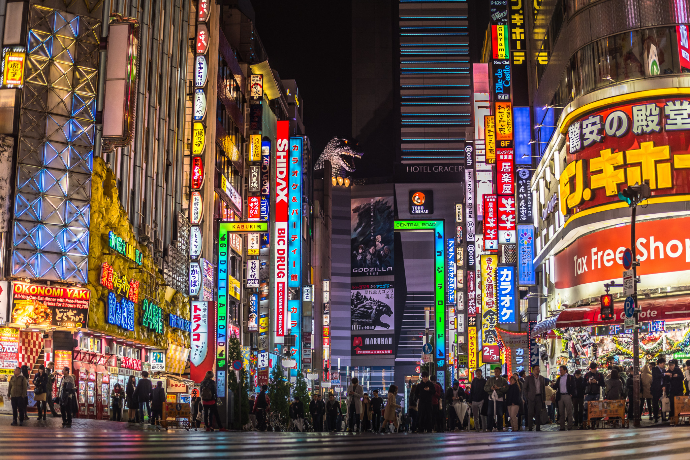
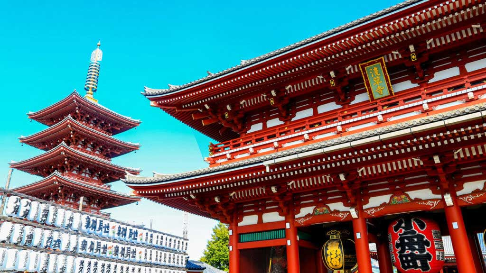

Shinjuku

Shibuya

Discover the best eating out, attractions and hotels that Tokyo has to offer
Located in the Kanto region of Japan's largest island, Honshu, Tokyo is the political and economic capital of Japan, the
seat of the Emporor and government of Japan, and the most populated metropolitan area in the world
Originally a fishing village called Edo, Tokyo is now one of the world's mega-cities. Known for its skyscrapers, neon-signs and
unique culture, Tokyo is a city with something for every kind of person.
paragraph here about spring time